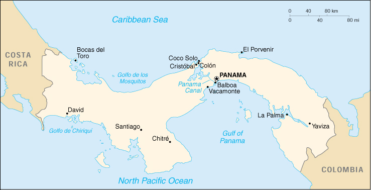

{kind=link}


| Panama |
|
|  | |
| Introduction |
Background: With US backing, Panama seceded from Colombia in 1903 and promptly signed a treaty with the US allowing for the construction of a canal and US sovereignty over a strip of land on either side of the structure (the Panama Canal Zone). The Panama Canal was built by the US Army Corps of Engineers between 1904 and 1914. On 7 September 1977, an agreement was signed for the complete transfer of the Canal from the US to Panama by 1999. Certain portions of the Zone and increasing responsibility over the Canal were turned over in the intervening years. With US help, dictator Manuel NORIEGA was deposed in 1989. The entire Panama Canal, the area supporting the Canal, and remaining US military bases were turned over to Panama on 31 December 1999.
| Geography |
Location: Middle America, bordering both the Caribbean Sea and the North Pacific Ocean, between Colombia and Costa Rica
Geographic coordinates: 9 00 N, 80 00 W
Map references: Central America and the Caribbean
Area:
total:
78,200 sq km
land:
75,990 sq km
water:
2,210 sq km
Area - comparative: slightly smaller than South Carolina
Land boundaries:
total:
555 km
border countries:
Colombia 225 km, Costa Rica 330 km
Coastline: 2,490 km
Maritime claims:
contiguous zone:
24 nm
exclusive economic zone:
200 nm
territorial sea:
12 nm
Climate: tropical maritime; hot, humid, cloudy; prolonged rainy season (May to January), short dry season (January to May)
Terrain: interior mostly steep, rugged mountains and dissected, upland plains; coastal areas largely plains and rolling hills
Elevation extremes:
lowest point:
Pacific Ocean 0 m
highest point:
Volcan de Chiriqui 3,475 m
Natural resources: copper, mahogany forests, shrimp, hydropower
Land use:
arable land:
7%
permanent crops:
2%
permanent pastures:
20%
forests and woodland:
44%
other:
27% (1993 est.)
Irrigated land: 320 sq km (1993 est.)
Natural hazards: NA
Environment - current issues: water pollution from agricultural runoff threatens fishery resources; deforestation of tropical rain forest; land degradation and soil erosion threatens siltation of Panama Canal
Environment - international agreements:
party to:
Biodiversity, Climate Change, Climate Change-Kyoto Protocol, Desertification, Endangered Species, Hazardous Wastes, Law of the Sea, Marine Dumping, Nuclear Test Ban, Ozone Layer Protection, Ship Pollution, Tropical Timber 83, Tropical Timber 94, Wetlands, Whaling
signed, but not ratified:
Marine Life Conservation
Geography - note: strategic location on eastern end of isthmus forming land bridge connecting North and South America; controls Panama Canal that links North Atlantic Ocean via Caribbean Sea with North Pacific Ocean
| People |
Population: 2,808,268 (July 2000 est.)
Age structure:
0-14 years:
31% (male 439,590; female 422,949)
15-64 years:
63% (male 901,793; female 878,138)
65 years and over:
6% (male 79,330; female 86,468) (2000 est.)
Population growth rate: 1.34% (2000 est.)
Birth rate: 19.53 births/1,000 population (2000 est.)
Death rate: 4.95 deaths/1,000 population (2000 est.)
Net migration rate: -1.16 migrant(s)/1,000 population (2000 est.)
Sex ratio:
at birth:
1.04 male(s)/female
under 15 years:
1.04 male(s)/female
15-64 years:
1.03 male(s)/female
65 years and over:
0.92 male(s)/female
total population:
1.02 male(s)/female (2000 est.)
Infant mortality rate: 20.8 deaths/1,000 live births (2000 est.)
Life expectancy at birth:
total population:
75.47 years
male:
72.74 years
female:
78.31 years (2000 est.)
Total fertility rate: 2.32 children born/woman (2000 est.)
Nationality:
noun:
Panamanian(s)
adjective:
Panamanian
Ethnic groups: mestizo (mixed Amerindian and white) 70%, Amerindian and mixed (West Indian) 14%, white 10%, Amerindian 6%
Religions: Roman Catholic 85%, Protestant 15%
Languages:
Spanish (official), English 14%
note:
many Panamanians bilingual
Literacy:
definition:
age 15 and over can read and write
total population:
90.8%
male:
91.4%
female:
90.2% (1995 est.)
| Government |
Country name:
conventional long form:
Republic of Panama
conventional short form:
Panama
local long form:
Republica de Panama
local short form:
Panama
Data code: PM
Government type: constitutional democracy
Capital: Panama
Administrative divisions: 9 provinces (provincias, singular - provincia) and 2 territories* (comarca); Bocas del Toro, Chiriqui, Cocle, Colon, Darien, Herrera, Los Santos, Ngobe-Bugle*, Panama, San Blas*, and Veraguas
Independence: 3 November 1903 (from Colombia; became independent from Spain 28 November 1821)
National holiday: Independence Day, 3 November (1903)
Constitution: 11 October 1972; major reforms adopted April 1983 and in 1994
Legal system: based on civil law system; judicial review of legislative acts in the Supreme Court of Justice; accepts compulsory ICJ jurisdiction, with reservations
Suffrage: 18 years of age; universal and compulsory
Executive branch:
chief of state:
President Mireya Elisa MOSCOSO Rodriguez (since 1 September 1999); First Vice President Arturo Ulises VALLARINO (since 1 September 1999); Second Vice President (Dominador) Kaiser Baldonero BAZAN (since 1 September 1999); note - the president is both the chief of state and head of government
head of government:
President Mireya Elisa MOSCOSO Rodriguez (since 1 September 1999); First Vice President Arturo Ulises VALLARINO (since 1 September 1999); Second Vice President (Dominador) Kaiser Baldonero BAZAN (since 1 September 1999); note - the president is both the chief of state and head of government
cabinet:
Cabinet appointed by the president
elections:
president and vice presidents elected on the same ticket by popular vote for five-year terms; election last held 2 May 1999 (next to be held NA May 2004)
election results:
Mireya Elisa MOSCOSO Rodriguez elected president; percent of vote - Mireya Elisa MOSCOSO Rodriguez (PA) 44%, Martin TORRIJOS (PRD) 37%
note:
government coalition - PRD, PLN, and Popular Nationalist Party
Legislative branch:
unicameral Legislative Assembly or Asamblea Legislativa (72 seats; members are elected by popular vote to serve five-year terms)
elections:
last held 2 May 1999 (next to be held May 2004)
election results:
percent of vote by party - NA; seats by party - PRD 35, PA 18, PS 4, PDC 4, MOLIRENA 3, PRC 2, PLN 2, Democratic Change 2, MORENA 1; note - one seat had yet to be decided
note:
legislators from outlying rural districts are chosen on a plurality basis while districts located in more populous towns and cities elect multiple legislators by means of a proportion-based formula
Judicial branch: Supreme Court of Justice or Corte Suprema de Justicia, nine judges appointed for 10-year terms; five superior courts; three courts of appeal
Political parties and leaders: Arnulfista Party or PA [Mireya Elisa MOSCOSO Rodriguez]; Christian Democratic Party or PDC [Ruben AROSEMENA]; Civic Renewal Party or PRC [Serguei DE LA ROSA]; Democratic Change [Ricardo MARTINELLI]; Democratic Revolutionary Party or PRD [Martin TORRIJOS]; National Liberal Party or PLN [Dr. Roberto ALEMAN Zubieta, Oscar UCROS, Raul ARANGO]; National Renovation Movement or MORENA [Joaquin Jose VALLARINO]; Nationalist Republican Liberal Movement or MOLIRENA [Arturo VALLARINO]; Solidarity Party or PS [Ricardo FABREGA]
Political pressure groups and leaders: Chamber of Commerce; National Civic Crusade; National Council of Organized Workers or CONATO; National Council of Private Enterprise or CONEP; Panamanian Association of Business Executives or APEDE; Panamanian Industrialists Society or SIP; Workers Confederation of the Republic of Panama or CTRP
International organization participation: CAN (associate), CCC, ECLAC, FAO, G-77, IADB, IAEA, IBRD, ICAO, ICFTU, ICRM, IDA, IFAD, IFC, IFRCS, ILO, IMF, IMO, Inmarsat, Intelsat, Interpol, IOC, IOM, ISO, ITU, LAES, LAIA (observer), NAM, OAS, OPANAL, OPCW, PCA, RG, UN, UNCTAD, UNESCO, UNIDO, UPU, WCL, WFTU, WHO, WIPO, WMO, WToO, WTrO
Diplomatic representation in the US:
chief of mission:
Ambassador Guillermo FORD
chancery:
2862 McGill Terrace NW, Washington, DC 20008
telephone:
[1] (202) 483-1407
consulate(s) general:
Atlanta, Houston, Miami, New Orleans, New York, Philadelphia, San Francisco, Tampa
Diplomatic representation from the US:
chief of mission:
Ambassador Simon FERRO
embassy:
Avenida Balboa and Calle 38, Apartado 6959, Panama City 5
mailing address:
American Embassy Panama, Unit 0945, APO AA 34002
telephone:
[507] 227-1777
FAX:
[507] 227-1964
Flag description: divided into four, equal rectangles; the top quadrants are white (hoist side) with a blue five-pointed star in the center and plain red; the bottom quadrants are plain blue (hoist side) and white with a red five-pointed star in the center
| Economy |
Economy - overview: Because of its key geographic location, Panama's economy is service-based, heavily weighted toward banking, commerce, and tourism. The hand-over of the canal and military installations by the US has given rise to new construction projects. The MOSCOSO administration inherited an economy that is much more structurally sound and liberalized than the one inherited by its predecessor. Even though export demand is likely to remain slack in some key markets - especially the Andean countries - GDP growth in 2000 probably will be 3% to 4%. Key reform initiatives from the previous administration - including the privatization of public utilities - remain uncompleted. Although President MOSCOSO is unlikely to overturn any previous reforms, her populist leanings make it unlikely any new initiatives will be undertaken in the near future. Indeed, the government has failed to formulate a comprehensive economic policy framework, and the only concrete step it has taken by yearend 1999 has been a hike in agricultural tariffs.
GDP: purchasing power parity - $21 billion (1999 est.)
GDP - real growth rate: 4.4% (1999 est.)
GDP - per capita: purchasing power parity - $7,600 (1999 est.)
GDP - composition by sector:
agriculture:
8%
industry:
25%
services:
67% (1997 est.)
Population below poverty line: NA%
Household income or consumption by percentage share:
lowest 10%:
0.5%
highest 10%:
42.5% (1991)
Inflation rate (consumer prices): 1.5% (1999 est.)
Labor force:
1.044 million (1997 est.)
note:
shortage of skilled labor, but an oversupply of unskilled labor
Labor force - by occupation: agriculture 18%, industry 18%, services 64% (1997 est.)
Unemployment rate: 13.1% (1997 est.)
Budget:
revenues:
$2.4 billion
expenditures:
$2.4 billion, including capital expenditures of $341 million (1997 est.)
Industries: construction, petroleum refining, brewing, cement and other construction materials, sugar milling
Industrial production growth rate: 0.4% (1995 est.)
Electricity - production: 4.523 billion kWh (1998)
Electricity - production by source:
fossil fuel:
25.56%
hydro:
73.78%
nuclear:
0%
other:
0.66% (1998)
Electricity - consumption: 4.329 billion kWh (1998)
Electricity - exports: 13 million kWh (1998)
Electricity - imports: 136 million kWh (1998)
Agriculture - products: bananas, rice, corn, coffee, sugarcane, vegetables; livestock; shrimp
Exports: $4.7 billion (f.o.b., 1999 est.)
Exports - commodities: bananas, shrimp, sugar, coffee
Exports - partners: US 40%, Sweden, Costa Rica, Spain, Benelux, Honduras (1998)
Imports: $6.4 billion (f.o.b., 1999 est.)
Imports - commodities: capital goods, crude oil, foodstuffs, consumer goods, chemicals
Imports - partners: US 40%, Central America and Caribbean, Japan (1998)
Debt - external: $7 billion (1999)
Economic aid - recipient: $197.1 million (1995)
Currency: 1 balboa (B) = 100 centesimos
Exchange rates: balboas (B) per US$1 - 1.000 (fixed rate)
Fiscal year: calendar year
| Communications |
Telephones - main lines in use: 325,300 (1998)
Telephones - mobile cellular: 0 (1995)
Telephone system:
domestic and international facilities well developed
domestic:
NA
international:
1 coaxial submarine cable; satellite earth stations - 2 Intelsat (Atlantic Ocean); connected to the Central American Microwave System
Radio broadcast stations: AM 80, FM 44, shortwave 0 (1998)
Radios: 815,000 (1997)
Television broadcast stations: 9 (plus 17 repeaters) (1997)
Televisions: 510,000 (1997)
Internet Service Providers (ISPs): 3 (1999)
| Transportation |
Railways:
total:
355 km
broad gauge:
76 km 1.524-m gauge
narrow gauge:
279 km 0.914-m gauge
Highways:
total:
11,258 km
paved:
3,783 km (including 30 km of expressways)
unpaved:
7,475 km (1999 est.)
Waterways: 800 km navigable by shallow draft vessels; 82 km Panama Canal
Pipelines: crude oil 130 km
Ports and harbors: Balboa, Cristobal, Coco Solo, Manzanillo (part of Colon area), Vacamonte
Merchant marine:
total:
4,732 ships (1,000 GRT or over) totaling 106,054,086 GRT/159,304,019 DWT
ships by type:
bulk 1,377, cargo 976, chemical tanker 323, combination bulk 68, combination ore/oil 15, container 525, liquified gas 184, livestock carrier 8, multi-functional large load carrier 12, passenger 46, passenger/cargo 4, petroleum tanker 496, rail car carrier 2, refrigerated cargo 313, roll-on/roll-off 106, short-sea passenger 42, specialized tanker 33, vehicle carrier 202 (1999 est.)
note:
a flag of convenience registry; includes ships from 71 countries among which are Japan 1,262, Greece 378, Hong Kong 244, South Korea 259, Taiwan 229, China 193, Singapore 103, US 116, Switzerland 78, and Indonesia 53 (1998 est.)
Airports: 105 (1999 est.)
Airports - with paved runways:
total:
41
over 3,047 m:
1
2,438 to 3,047 m:
1
1,524 to 2,437 m:
5
914 to 1,523 m:
13
under 914 m:
21 (1999 est.)
Airports - with unpaved runways:
total:
64
914 to 1,523 m:
15
under 914 m:
49 (1999 est.)
| Military |
Military branches: an amendment to the Constitution abolished the armed forces, but there are security forces (Panamanian Public Forces or PPF includes the National Police, National Maritime Service, and National Air Service)
Military manpower - availability:
males age 15-49:
761,568 (2000 est.)
Military manpower - fit for military service:
males age 15-49:
521,487 (2000 est.)
Military expenditures - dollar figure: $132 million (FY97)
Military expenditures - percent of GDP: 1.6% (FY97)
Military - note: on 10 February 1990, the government of then President ENDARA abolished Panama's military and reformed the security apparatus by creating the Panamanian Public Forces; in October 1994, Panama's Legislative Assembly approved a constitutional amendment prohibiting the creation of a standing military force, but allowing the temporary establishment of special police units to counter acts of "external aggression"
| Transnational Issues |
Disputes - international: none
Illicit drugs: major cocaine transshipment point and major drug-money-laundering center; no recent signs of coca cultivation; monitoring of financial transactions is improving, yet Panama has failed to prosecute anyone for money laundering - official corruption remains a major problem